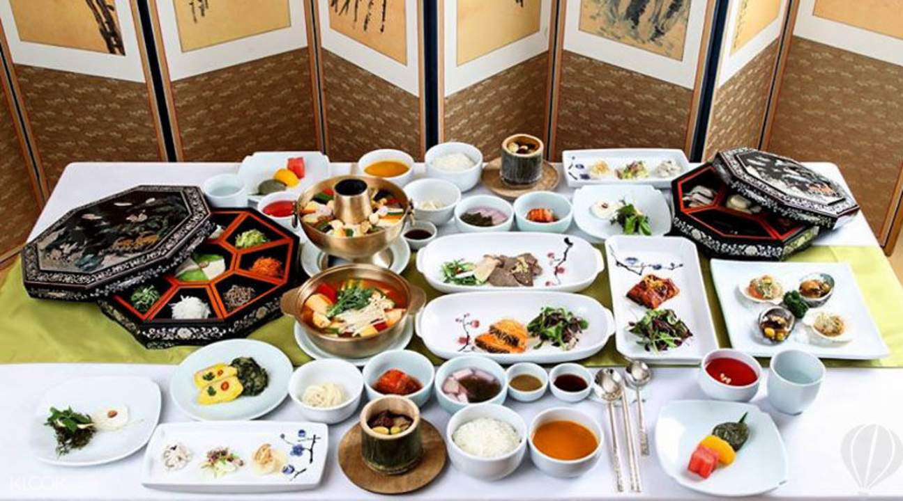
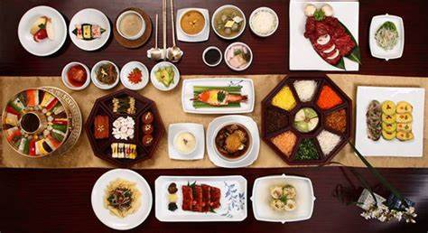
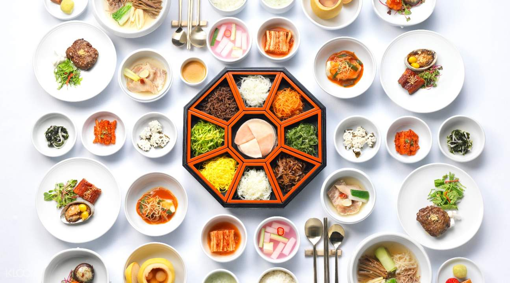
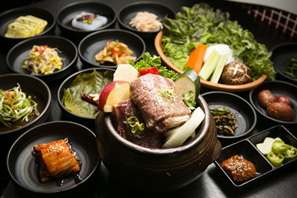

利用來自韓國各地進貢的高質食物及經過廚藝出色的尚宮們料理而成，
流傳千古，成為人們皆知的韓國宮廷料理。
宮廷料理由從小到大都接受煮食訓練的宮女及男大廚籌備而成
他們會用各地進貢最優質的當季海鮮、穀物、肉類以多樣化的方式煮食，
能讓食物發揮到最美味，同時，宴會中的每一口食物外貿必須都要完美無瑕，
只能選用沒有缺陷的食材製作。宮廷料理不會使用重口味的香料，都以清淡和清爽風味為主。
   
音樂AND影片
Your browser does not support the audio element. Your browser does not support the video tag.
(首頁)中國宮廷美食介紹 泰國宮廷美食介紹 義大利傳統美食介紹 心得